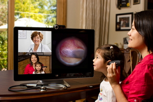
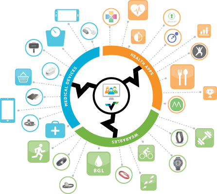

TurningPro and Health Samurai partnership
developing simplicity in a complex domain
Problem
Physicians need to stay in contact with patients after a study or inpatient stay to reduce re-admits
Target populations: at-risk populations, inner-city impoverished areas, rural communities and prisoners
Solution
Partnering together, TurningPro and Health Samurai plan to develop a custom patient monitoring platform collecting data from medical sensors and providing with tele-medicine capabilities
How?
fhirbase
Open source stack for Health IT application development based on HL7 FHIR standard
Why fhirbase?
- production grade standardized back-end for medical applications
- facilitates integration with EHR systems
- HL7 FHIR is supported by major EHR vendors and ONC
VSee
World's Largest Video Telemedicine Platform
Why VSee?
- securely encrypted and HIPAA-compliant
- best compression over the wire for the lowest bandwidth
- fully supported on Windows, Mac, and iOS
Validic
One easy connection to digital health data from different vendors
Why Validic?
- universal API for medical sensors from different vendors
- secure and HIPAA-compliant
- great growing selection of activity monitors, scales, glucometers, thermometers, blood pressure monitors, pulse oximeters etc
Why TurningPro?
- 15+ years providing training and career placement services to at-risk populations
- hundreds of student success stories
- TurningPro leadership also has years of experience in the healthcare industry, including leadership roles as a VP of IT and PMO Director
Why Health Samurai?
- actively participates in the HL7 FHIR community and created fhirbase
- implemented cloud inpatient EHR in three hospitals in California
- including tele-medicine for the Verdugo Hills Hospital ER
- effective development process
Effective development process
verify all the assumptions quickly by means of research and prototyping and then iteratively develop a product solving real user needs
Contact TurningPro Solutions
Rob Velasco
(602) 363-6647